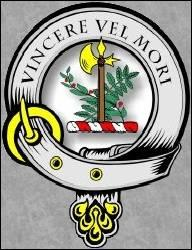
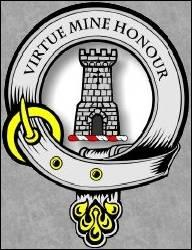

Gathering of Clan McLean
Rassemblement du Clan McLean
By Mary Ross [1]
Tune - MélodieNo tune known for this song. Here replaced by "Our ain bonnie Laddie"
from Hogg's "Jacobite Relics" 2nd Series N°34
Sequenced by Christian Souchon

|
 GATHERING OF THE CLAN 1. Banners are waving o'er Morvern's dark heath, [2] Claymores are flashing from many a sheath. Hark! 'tis the gath'ring! On! onward! they cry; Far flies the signal, "To conquer or die." (bis) [3] Then follow thee! follow! a boat to the sea! Thy Prince in Glen Moidart is waiting for thee; Where war-pipes are sounding and banners are free; MacLean and his clansmen the foremost you'll see. (bis) 2. Wildly the war-cry has startled yon stag, And waken'd the echoes of Gillean's lone crag; [4] Up hill and down glen each brave mountaineer' Has belted his plaid and mounted his spear. Then follow thee! follow! etc. 3. The signal is heard from mountain to shore. They rush like the flood o'er dark Corry-Vohr; [5] The war-note is sounding loud, wildly, and high: Louder they shout, ".On! to conquer or die." Then follow thee! follow! eic. 4. The heath-bell at morn so proudly ye trod, Son of the mountain, now covers thy sod; Wrapt in your plaid, 'mid the bravest ye lie; The words as ye fell, still to conquer or die! Then follow thee! follow ! a boat to the sea! Thy Prince in Glen Moidart is waiting for thee; Where war-pipes aro sounding and banner, lire free: MacLean and his clansmen the foremost you'll see! [6] Source: "A History of Clan McLean" by J.P.McLean |
 LE RASSEMBLEMENT DES McLEAN 1. Partout sur Morvern flottent les bannières [2] Et des fourreaux surgissent les claymores. Que nous crient donc toutes ces voix altières? "Rassemblement! La victoire ou la mort!" (bis) [3] Le suivre! Vite un bateau pour le suivre! Ton Prince est à Glen Moidart. Il t'attend. Au milieu des drapeaux et cornemuses On y verra les McLean aux premiers rangs! (bis) 2. Les slogans ont effarouché les biches, Réveillé, Gillean, les échos pierreux [4] Vois comme les monts et les glens s'emplissent Des braves ceints du plaid, portant l'épieu! Le suivre... 3. L'appel s'entend des monts jusqu'au rivage. Leur flot submerge bientôt Corry-Vohr. [5] L'air guerrier se fait violent et sauvage, Ce lancinant "La victoire ou la mort!" Le suivre... 4. Ceux qui foulaient fièrement les fougères, Fils des monts, l'herbe recouvre leurs corps Couverts du plaid, et tous ceux-là tombèrent En s'écriant: "La victoire ou la mort!" Le suivre! Vite un bateau pour le suivre! Ton Prince est à Glen Moidart. Il t'attend! Au son des cornemuses qui t'enivre, Tu reconnaîtras le Clan McLean au premier rang! [6] (Trad. Christian Souchon(c)2010) |
|
[1]
Mary Ross
: According to "A History of the Clan MacLean ..." by J.P. McLean (1889), "Miss Ross was a lady of rare accomplishments. She was born in Edinburgh. Her mother was Julian, daughter of Gillean McLean of Scallasdale. She dedicated this ballad to the clan. The poem is taken from "Account Clan McLean". (Another famous McLean by his mother: the actor Sean Connery).
[2] Morvern : the McLeans owned large tracts of land in Argyll as well as the Inner Hebrides. Next to Moidart, Morvern is a peninsula separated from it by Loch Sunart, to be crossed by boat . Hence the invite in the previous poem to "Come over the stream". [3] To conquer or die : though most sellers of clan "gear" mostly advertise only the Tower crest of the Duart, Pennycross and Drimnin branches of Clan McLean , which bears the motto "Virtue mine honour", the most common crest for the McLean is the battle-axe between cypress and laurel, commemorating descent from Gillane of the Battle-Axe. The crest may bear two different mottos: "Altera Merces" (either of them is a reward) and "Vincere vel Mori", both meaning "To conquer or die". Laurel for victory and cypress for death. Remark: the McLean of Duart Hunting Tartan used as a background for this page is recognized as the oldest tartan in the world. Source: Clan McLean Atlantic Canada [4] Gillean : the Gaelic name of the clan, Mac GilleEathain, the "sons of Gillane" (a personal name meaning "servant of Saint John"), after their founder, Gilleain na Tuaighe, Gillane of the Battleaxe (1174 - 1249). [5] Corry-Vohr : maybe for "Coire mór" (big corrie) or the "Glen More" across the Isle of Mull. [6] The foremost you'll see : The McLeans were fierce Jacobites who fought in all the Jacobite risings. - At Killiecrankie, 1689, the Clan, led by Sir John Mclean , 20th chief fought in support of Bonny Dundee. - Sir Hector Mclean , living in exile in Paris, went to Edinburgh to gain support for the Prince Charles Edward Stuart, but was betrayed by his bootmaker and was imprisoned in Edinburgh Caste and then the Tower of London. Because he was considered a French citizen, he escaped a capital sentence and was released after the rising was over. - Many members of the clan were killed fighting at the Battle of Culloden in 1746. Charles M cLean of Drimin was killed leading the McLeans at Culloden. Source: Wikipedia |
[1]
Mary Cross
: selon l'"Histoire du Clan McLean..." de J.P. McLean (1889), "Miss Ross était une demoiselle très talentueuse. Elle était née à Edimbourg. Sa mère s'appelait Julienne, fille de Gillean McLean de Scallasdale. Elle dédia cette ballade au clan. Le poème est tiré de "Account Clan McLean". (Un autre McLean-par-sa-mère fameux: l'acteur Sean Connery).
[2] Morvern :Les McLean possédaient des domaines étendus en Argyll et dans les Hébrides Intérieures. La plus proche de Moidart, la presqu'île de Morvern en est séparée par le Loch Sunart qu'il faut franchir en bateau . D'où l'invitation, dans le chant précédent , à "franchir le courant". [3] La victoire ou la mort : bien que la plupart des marchands d'"équipements claniques" ne connaissent que l'insigne à la Tour des McLean de Duart, Pennycross et Drimnin, lequel porte la devise "Virtue mine honour" (le courage est mon honneur), l'insigne McLean le plus répandu est la Hache de bataille entre cyprès et laurier, qui évoque Gillane-à-la Hache. L'insigne peut porter deux devises différentes: "Altera Merces" (pour l'une ou l'autre, merci) et "Vincer vel mori", ce qui veut dire dans les deux cas: "la victoire ou la mort"; le laurier pour la victoire, le cyprès pour la mort. Remarque: le tartan de chasse des McLean de Duart utilisé ici comme "papier peint" est le plus ancien tartan que l'on connaisse. Source: Clan McLean Atlantic Canada [4] Gillean : le nom gaélique du clan Mac GilleEathain, les "fils de Gillane" (prénom signifiant "serviteur de Saint Jean"), rappelle qu'il fut fondé par Gilleain na Tuaighe, Gillane à la Hache de Bataille (1174 - 1249). [5] Corry-Vohr : peut être pour "Coire môr" (la grande combe) ou pour "Glen More", qui traverse l'ïle de Mull; Source: Clan McLean Atlantic Canada [6] Clan McLean au premier rang : les McLean furent des Jacobites acharnés qui prirent part à tous les soulèvements. - A Killiecrankie, 1689, le clan, conduit par son 20ème chef, Sir John McLean , combattit pour Bonny Dundee. - Sir Hector McLean , exilé à Paris, se rendit à Edimbourg pour rallier des partisans en faveur du Prince Charles, mais il fut dénoncé par son bottier et emprisonné dans la citadelle d'Edimbourg, puis à la Tour de Londres. Considéré comme ressortissant français, il échappa à la peine capitale et fut relâché, une fois la rébellion mâtée. - Plusieurs hommes du clan tombèrent à la bataille de Culloden en 1746, dont Charles McLean , leur commandant. Source: Wikipedia |